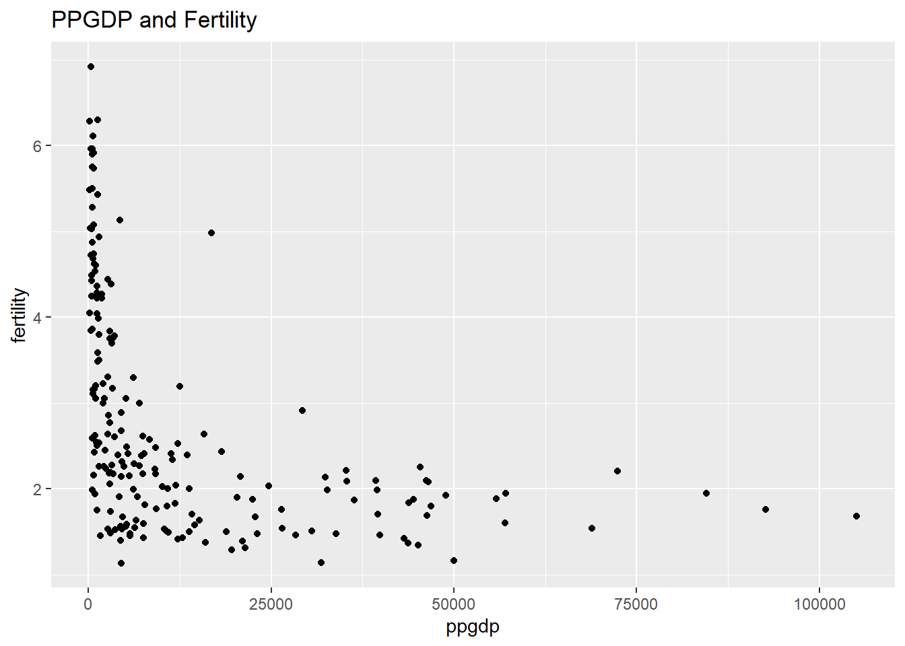
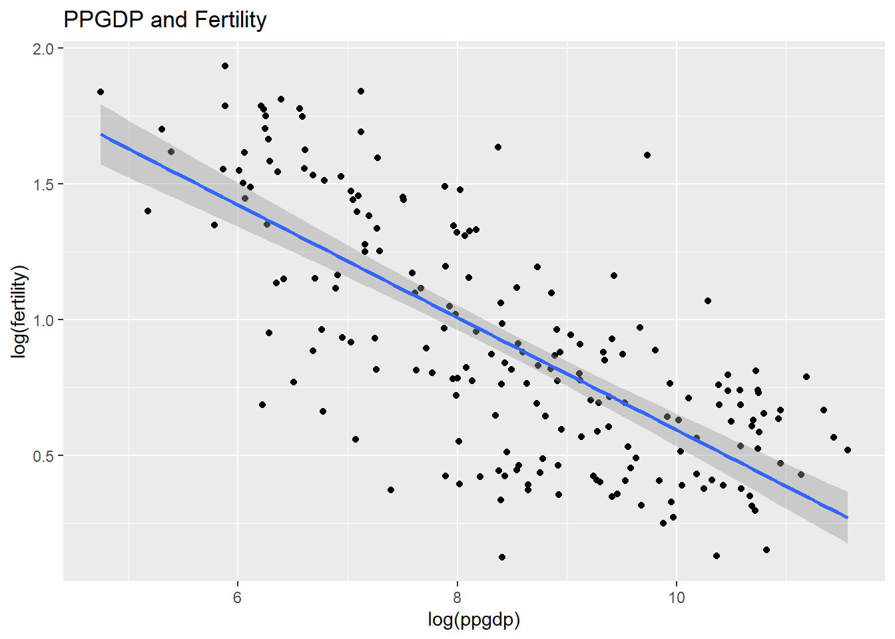
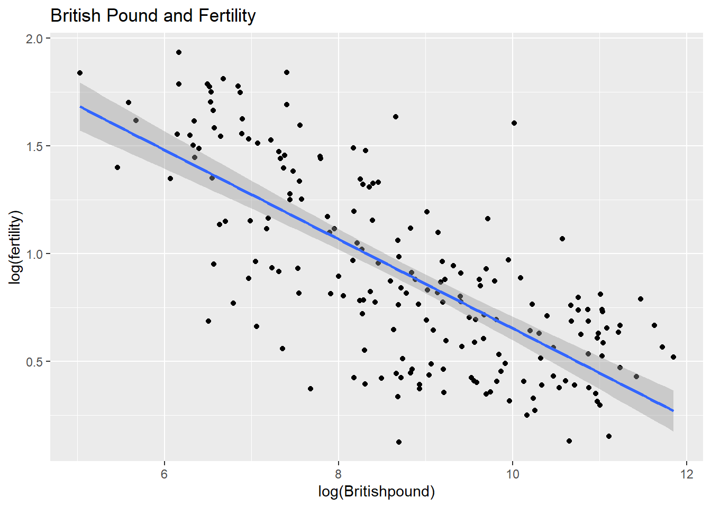

The data in the file UN11 contains several variables, including ppgdp, the gross national product per person in U.S. dollars, and fertility, the birth rate per 1000 females, both from the year 2009. The data are for 199 localities, mostly UN member countries, but also other areas such as Hong Kong that are not independent countries. The data were collected from the United Nations (2011). We will study the dependence of fertility on ppgdp.
1.1.1
Question: Identify the predictor and the response.
Answer: The predictor is ppgdp, and the response is ferility, since we are looking at how ppgdp (the independent variable) is affecting fertility (dependent variable).
1.1.2
Question: Draw the scatterplot of fertility on the vertical axis versus ppgdp on the horizontal axis and summarize the information in this graph. Does a straight-line mean function seem to be plausible for a summary of this graph?
Loading required package: car
Loading required package: carData
Attaching package: 'car'
The following object is masked from 'package:dplyr':
recode
The following object is masked from 'package:purrr':
some
Loading required package: effects
lattice theme set by effectsTheme()
See ?effectsTheme for details.
Code
library(smss)
Warning: package 'smss' was built under R version 4.2.2
Code
# Importing the UN11 datasetdata(UN11)# Creating a scatterplotggplot(data = UN11, aes(x = ppgdp, y = fertility)) +geom_point(color ='black') +labs(title ="PPGDP and Fertility")

Answer: This graph does not look like it could represented by a linear function. Rather, it looks like it would be represented by a nonlinear (curvilinear) function.
1.1.3
Question: Draw the scatterplot of log(fertility) versus log(ppgdp) using natural logarithms. Does the simple linear regression model seem plausible for a summary of this graph? If you use a different base of logarithms, the shape of the graph won’t change, but the values on the axes will change.
Code
# Creating a scatterplotggplot(data = UN11, aes(x =log(ppgdp), y =log(fertility))) +geom_point(color ='black') +geom_smooth(method = lm) +labs(title ="PPGDP and Fertility")
`geom_smooth()` using formula 'y ~ x'

Answer: After taking the logarithm of each variable, based on the graph, it is now plausible to use a simple linear regression.
Question 2
Annual income, in dollars, is an explanatory variable in a regression analysis. For a British version of the report on the analysis, all responses are converted to British pounds sterling (1 pound equals about 1.33 dollars, as of 2016).
Part A
Question: How, if at all, does the slope of the prediction equation change?
Code
# Creating a variable for the British poundUN11$Britishpound <-1.33*UN11$ppgdp# Examining the slopesummary(lm(fertility ~ Britishpound, UN11))
Call:
lm(formula = fertility ~ Britishpound, data = UN11)
Residuals:
Min 1Q Median 3Q Max
-1.9006 -0.8801 -0.3547 0.6749 3.7585
Coefficients:
Estimate Std. Error t value Pr(>|t|)
(Intercept) 3.178e+00 1.048e-01 30.331 < 2e-16 ***
Britishpound -2.407e-05 3.500e-06 -6.877 7.9e-11 ***
---
Signif. codes: 0 '***' 0.001 '**' 0.01 '*' 0.05 '.' 0.1 ' ' 1
Residual standard error: 1.206 on 197 degrees of freedom
Multiple R-squared: 0.1936, Adjusted R-squared: 0.1895
F-statistic: 47.29 on 1 and 197 DF, p-value: 7.903e-11
Code
ggplot(data = UN11, aes(x =log(Britishpound), y =log(fertility))) +geom_point(color ='black') +geom_smooth(method = lm) +labs(title ="British Pound and Fertility")
`geom_smooth()` using formula 'y ~ x'

Code
# Comparing the slopesummary(lm(fertility ~ ppgdp, UN11))
Call:
lm(formula = fertility ~ ppgdp, data = UN11)
Residuals:
Min 1Q Median 3Q Max
-1.9006 -0.8801 -0.3547 0.6749 3.7585
Coefficients:
Estimate Std. Error t value Pr(>|t|)
(Intercept) 3.178e+00 1.048e-01 30.331 < 2e-16 ***
ppgdp -3.201e-05 4.655e-06 -6.877 7.9e-11 ***
---
Signif. codes: 0 '***' 0.001 '**' 0.01 '*' 0.05 '.' 0.1 ' ' 1
Residual standard error: 1.206 on 197 degrees of freedom
Multiple R-squared: 0.1936, Adjusted R-squared: 0.1895
F-statistic: 47.29 on 1 and 197 DF, p-value: 7.903e-11
Answer: The slope has changed slightly due to the 1.33 increase adjustment for British pounds, but according to the results of the summary function, the adjusted R-squared is the same for both (0.1895).
Part B
Question: How, if at all, does the correlation change?
Code
# Finding the correlation with US dollarscor(UN11$ppgdp, UN11$fertility)
[1] -0.4399891
Code
# Finding the correlation with British poundscor(UN11$Britishpound, UN11$fertility)
[1] -0.4399891
Answer: The correlations of fertility with US dollars AND British pounds are the same, because, although British pounds are of a different value from US dollars, the values are multiplied by a constant (1.33).
Question 3
Water runoff in the Sierras (Data file: water in alr4)
Can Southern California’s water supply in future years be predicted from past data? One factor affecting water availability is stream runoff. If runoff could be predicted, engineers, planners, and policy makers could do their jobs more efficiently. The data file contains 43 years’ worth of precipitation measurements taken at six sites in the Sierra Nevada mountains (labeled APMAM, APSAB, APSLAKE, OPBPC, OPRC, and OPSLAKE) and stream runoff volume at a site near Bishop, California, labeled BSAAM. Draw the scatterplot matrix for these data and summarize the information available from these plots. (Hint: Use the pairs() function.)
Answer: This graph does not look like it could represented by a linear function. Rather, it looks like it would be represented by a nonlinear (curvilinear) function.
Question 4
Professor ratings (Data file: Rateprof in alr4)
In the website and online forum RateMyProfessors.com, students rate and comment on their instructors. Launched in 1999, the site includes millions of ratings on thousands of instructors. The data file includes the summaries of the ratings of 364 instructors at a large campus in the Midwest (Bleske-Rechek and Fritsch, 2011). Each instructor included in the data had at least 10 ratings over a several year period. Students provided ratings of 1–5 on quality, helpfulness, clarity, easiness of instructor’s courses, and raterInterest in the subject matter covered in the instructor’s courses. The data file provides the averages of these five ratings. Create a scatterplot matrix of these five variables. Provide a brief description of the relationships between the five ratings.
Code
# Importing datasetdata(Rateprof)# Creating a subset of the dataset with the five variables of interestRateprof5 <- Rateprof %>%select(quality, helpfulness, clarity, easiness, raterInterest)# Creating the scatterplotspairs(Rateprof5)
Answer: All 5 of the variables of interest have positive correlations. However, some relationships are stronger than others. Quality, helpfulness, and clarity all have stronger positive relationships, while easiness and raterInterest are very weak positive relationships.
Question 5
For the student.survey data file in the smss package, conduct regression analyses relating (by convention, y denotes the outcome variable, x denotes the explanatory variable) (i) y = political ideology and x = religiosity, (ii) y = high school GPA and x = hours of TV watching. (You can use ?student.survey in the R console, after loading the package, to see what each variable means.)
Part A
Question: Graphically portray how the explanatory variable relates to the outcome variable in each of the two cases
Code
# Importing datasetdata(student.survey)studentsurvey <- student.survey# Creating subset of data with variables neededstudentsurvey <- studentsurvey %>%select(hi, tv, pi, re)# Creating a plot to compare political ideology with religious service attendanceplot(pi ~ re, data = studentsurvey)
Code
# Creating a plot comparing High School GPA (hi) and average number of hours watching tb a week (tv)ggplot(data = studentsurvey, aes(x = tv, y = hi)) +geom_point() +geom_smooth(method = lm)
`geom_smooth()` using formula 'y ~ x'
Answer: Based on the plots generated, religious service attendance is correlated with conservatism, and hours of TV watched per week has a negative relationship with high school GPA.
Part B
Question: Summarize and interpret results of inferential analyses.
Code
# Changing the pi variable to a numeric onestudentsurvey$pi <-as.numeric(studentsurvey$pi)# Removing ordering from the re variablelevels(studentsurvey$re) <-c("N", "O", "M", "E")studentsurvey$re <-factor(studentsurvey$re, ordered =FALSE)# Conducting regression analyses for pi and resummary(lm(pi ~ re, studentsurvey))
Call:
lm(formula = pi ~ re, data = studentsurvey)
Residuals:
Min 1Q Median 3Q Max
-2.8889 -0.5172 -0.2667 1.2040 2.7333
Coefficients:
Estimate Std. Error t value Pr(>|t|)
(Intercept) 2.2667 0.3394 6.678 1.18e-08 ***
reO 0.2506 0.4181 0.599 0.551374
reM 2.1619 0.6017 3.593 0.000691 ***
reE 2.6222 0.5543 4.731 1.56e-05 ***
---
Signif. codes: 0 '***' 0.001 '**' 0.01 '*' 0.05 '.' 0.1 ' ' 1
Residual standard error: 1.315 on 56 degrees of freedom
Multiple R-squared: 0.3872, Adjusted R-squared: 0.3544
F-statistic: 11.8 on 3 and 56 DF, p-value: 4.282e-06
Code
# Conducting regression analyses for hi and tvsummary(lm(hi ~ tv, studentsurvey))
Call:
lm(formula = hi ~ tv, data = studentsurvey)
Residuals:
Min 1Q Median 3Q Max
-1.2583 -0.2456 0.0417 0.3368 0.7051
Coefficients:
Estimate Std. Error t value Pr(>|t|)
(Intercept) 3.441353 0.085345 40.323 <2e-16 ***
tv -0.018305 0.008658 -2.114 0.0388 *
---
Signif. codes: 0 '***' 0.001 '**' 0.01 '*' 0.05 '.' 0.1 ' ' 1
Residual standard error: 0.4467 on 58 degrees of freedom
Multiple R-squared: 0.07156, Adjusted R-squared: 0.05555
F-statistic: 4.471 on 1 and 58 DF, p-value: 0.03879
Answer: According to this dataset, people who attended religious services most weeks or every week are significantly more likely to report as conservative (p < 0.001). Additionally, people who watch less hours of tv are significantly more likely to have a higher GPA (p < 0.05).
Source Code
---title: "Homework 3 - Emily Duryea"author: "Emily Duryea"description: "The third homework assignment for DACSS 603"date: "10/31/2022"format: html: toc: true code-fold: true code-copy: true code-tools: truecategories: - hw3 - Emily Duryea---# Homework 3## Question 1United Nations (Data file: UN11in alr4)The data in the file UN11 contains several variables, including ppgdp, the gross national product per person in U.S. dollars, and fertility, the birth rate per 1000 females, both from the year 2009. The data are for 199 localities, mostly UN member countries, but also other areas such as Hong Kong that are not independent countries. The data were collected from the United Nations (2011). We will study the dependence of fertility on ppgdp.### 1.1.1Question: Identify the predictor and the response.Answer: The predictor is ppgdp, and the response is ferility, since we are looking at how ppgdp (the independent variable) is affecting fertility (dependent variable).### 1.1.2Question: Draw the scatterplot of fertility on the vertical axis versus ppgdp on the horizontal axis and summarize the information in this graph. Does a straight-line mean function seem to be plausible for a summary of this graph?```{r}# Importing needed librarieslibrary(tidyverse)library(ggplot2)library(alr4)library(smss)# Importing the UN11 datasetdata(UN11)# Creating a scatterplotggplot(data = UN11, aes(x = ppgdp, y = fertility)) +geom_point(color ='black') +labs(title ="PPGDP and Fertility")```Answer: This graph does not look like it could represented by a linear function. Rather, it looks like it would be represented by a nonlinear (curvilinear) function.### 1.1.3Question: Draw the scatterplot of log(fertility) versus log(ppgdp) using natural logarithms. Does the simple linear regression model seem plausible for a summary of this graph? If you use a different base of logarithms, the shape of the graph won't change, but the values on the axes will change.```{r}# Creating a scatterplotggplot(data = UN11, aes(x =log(ppgdp), y =log(fertility))) +geom_point(color ='black') +geom_smooth(method = lm) +labs(title ="PPGDP and Fertility")```Answer: After taking the logarithm of each variable, based on the graph, it is now plausible to use a simple linear regression.## Question 2Annual income, in dollars, is an explanatory variable in a regression analysis. For a British version of the report on the analysis, all responses are converted to British pounds sterling (1 pound equals about 1.33 dollars, as of 2016).### Part AQuestion: How, if at all, does the slope of the prediction equation change?```{r}# Creating a variable for the British poundUN11$Britishpound <-1.33*UN11$ppgdp# Examining the slopesummary(lm(fertility ~ Britishpound, UN11))ggplot(data = UN11, aes(x =log(Britishpound), y =log(fertility))) +geom_point(color ='black') +geom_smooth(method = lm) +labs(title ="British Pound and Fertility")# Comparing the slopesummary(lm(fertility ~ ppgdp, UN11))```Answer: The slope has changed slightly due to the 1.33 increase adjustment for British pounds, but according to the results of the summary function, the adjusted R-squared is the same for both (0.1895).### Part BQuestion: How, if at all, does the correlation change?```{r}# Finding the correlation with US dollarscor(UN11$ppgdp, UN11$fertility)# Finding the correlation with British poundscor(UN11$Britishpound, UN11$fertility)```Answer: The correlations of fertility with US dollars AND British pounds are the same, because, although British pounds are of a different value from US dollars, the values are multiplied by a constant (1.33).## Question 3Water runoff in the Sierras (Data file: water in alr4)Can Southern California's water supply in future years be predicted from past data? One factor affecting water availability is stream runoff. If runoff could be predicted, engineers, planners, and policy makers could do their jobs more efficiently. The data file contains 43 years' worth of precipitation measurements taken at six sites in the Sierra Nevada mountains (labeled APMAM, APSAB, APSLAKE, OPBPC, OPRC, and OPSLAKE) and stream runoff volume at a site near Bishop, California, labeled BSAAM. Draw the scatterplot matrix for these data and summarize the information available from these plots. (Hint: Use the pairs() function.)```{r}# Loading datasetdata(water)# Creating scatterplotspairs(water)# Conducting regression analysiswater1 <-lm(BSAAM ~ APMAM + APSAB + APSLAKE + OPBPC + OPRC + OPSLAKE, data = water)summary(water1)```Answer: This graph does not look like it could represented by a linear function. Rather, it looks like it would be represented by a nonlinear (curvilinear) function.## Question 4Professor ratings (Data file: Rateprof in alr4)In the website and online forum RateMyProfessors.com, students rate and comment on their instructors. Launched in 1999, the site includes millions of ratings on thousands of instructors. The data file includes the summaries of the ratings of 364 instructors at a large campus in the Midwest (Bleske-Rechek and Fritsch, 2011). Each instructor included in the data had at least 10 ratings over a several year period. Students provided ratings of 1--5 on quality, helpfulness, clarity, easiness of instructor's courses, and raterInterest in the subject matter covered in the instructor's courses. The data file provides the averages of these five ratings. Create a scatterplot matrix of these five variables. Provide a brief description of the relationships between the five ratings.```{r}# Importing datasetdata(Rateprof)# Creating a subset of the dataset with the five variables of interestRateprof5 <- Rateprof %>%select(quality, helpfulness, clarity, easiness, raterInterest)# Creating the scatterplotspairs(Rateprof5)```Answer: All 5 of the variables of interest have positive correlations. However, some relationships are stronger than others. Quality, helpfulness, and clarity all have stronger positive relationships, while easiness and raterInterest are very weak positive relationships.## Question 5For the student.survey data file in the smss package, conduct regression analyses relating (by convention, y denotes the outcome variable, x denotes the explanatory variable) (i) y = political ideology and x = religiosity, (ii) y = high school GPA and x = hours of TV watching. (You can use ?student.survey in the R console, after loading the package, to see what each variable means.)### Part AQuestion: Graphically portray how the explanatory variable relates to the outcome variable in each of the two cases```{r}# Importing datasetdata(student.survey)studentsurvey <- student.survey# Creating subset of data with variables neededstudentsurvey <- studentsurvey %>%select(hi, tv, pi, re)# Creating a plot to compare political ideology with religious service attendanceplot(pi ~ re, data = studentsurvey)# Creating a plot comparing High School GPA (hi) and average number of hours watching tb a week (tv)ggplot(data = studentsurvey, aes(x = tv, y = hi)) +geom_point() +geom_smooth(method = lm)```Answer: Based on the plots generated, religious service attendance is correlated with conservatism, and hours of TV watched per week has a negative relationship with high school GPA.### Part BQuestion: Summarize and interpret results of inferential analyses.```{r}# Changing the pi variable to a numeric onestudentsurvey$pi <-as.numeric(studentsurvey$pi)# Removing ordering from the re variablelevels(studentsurvey$re) <-c("N", "O", "M", "E")studentsurvey$re <-factor(studentsurvey$re, ordered =FALSE)# Conducting regression analyses for pi and resummary(lm(pi ~ re, studentsurvey))# Conducting regression analyses for hi and tvsummary(lm(hi ~ tv, studentsurvey))```Answer: According to this dataset, people who attended religious services most weeks or every week are significantly more likely to report as conservative (p \< 0.001). Additionally, people who watch less hours of tv are significantly more likely to have a higher GPA (p \< 0.05).